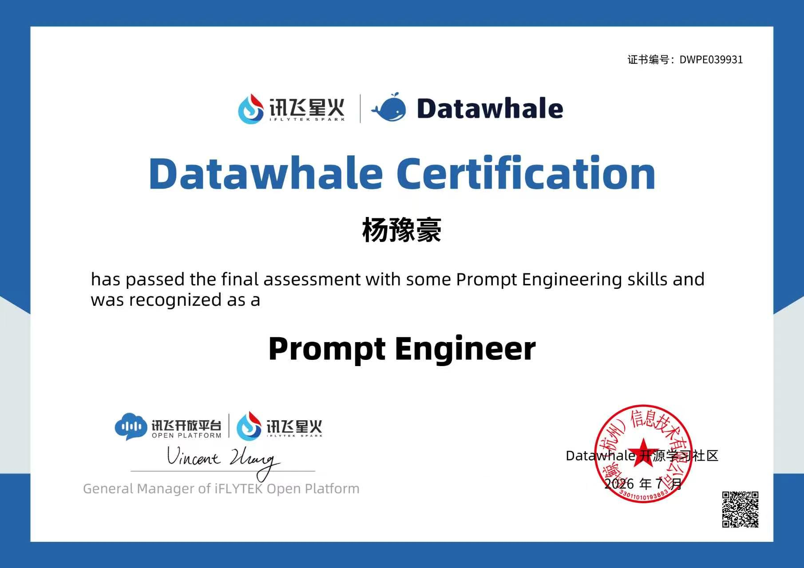
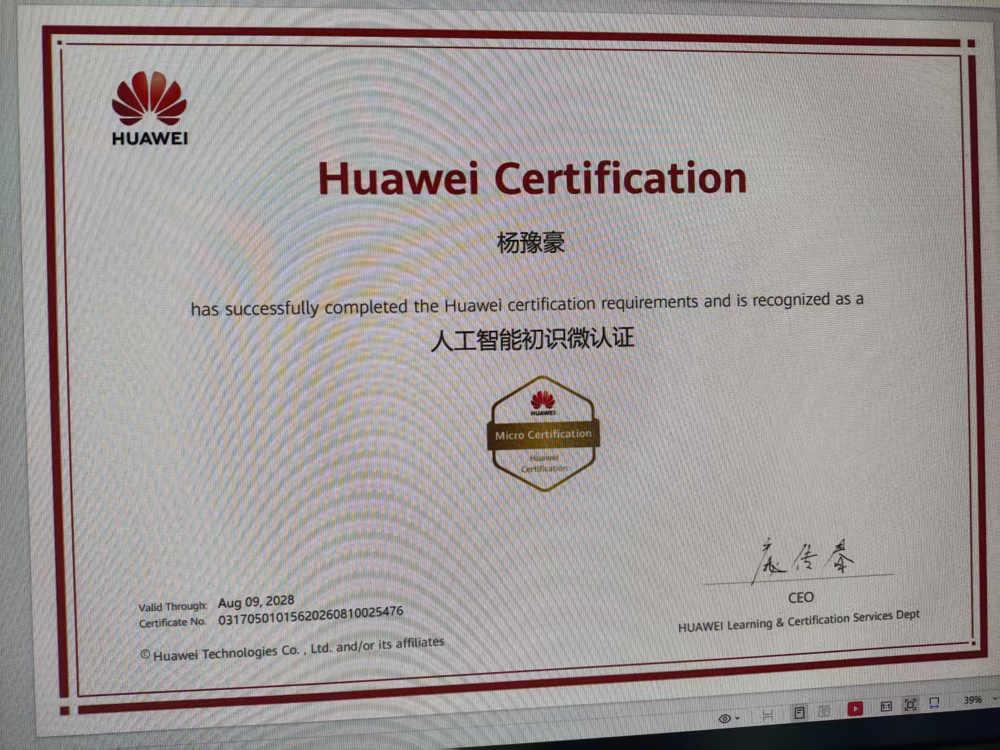
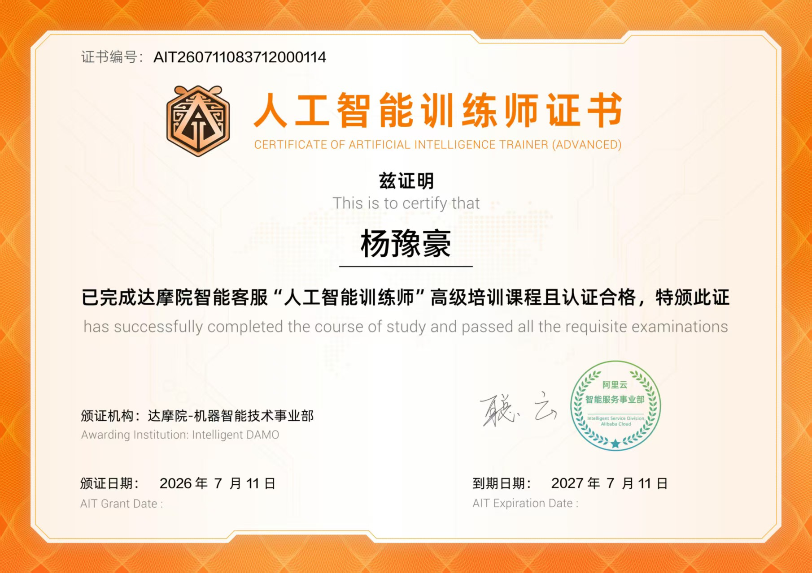
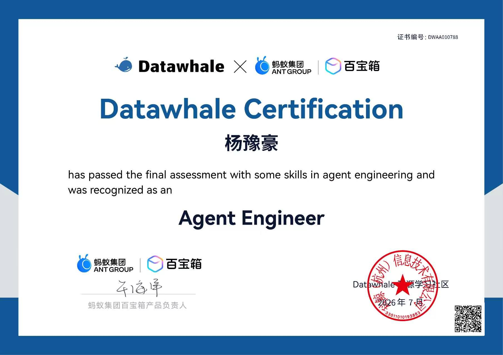
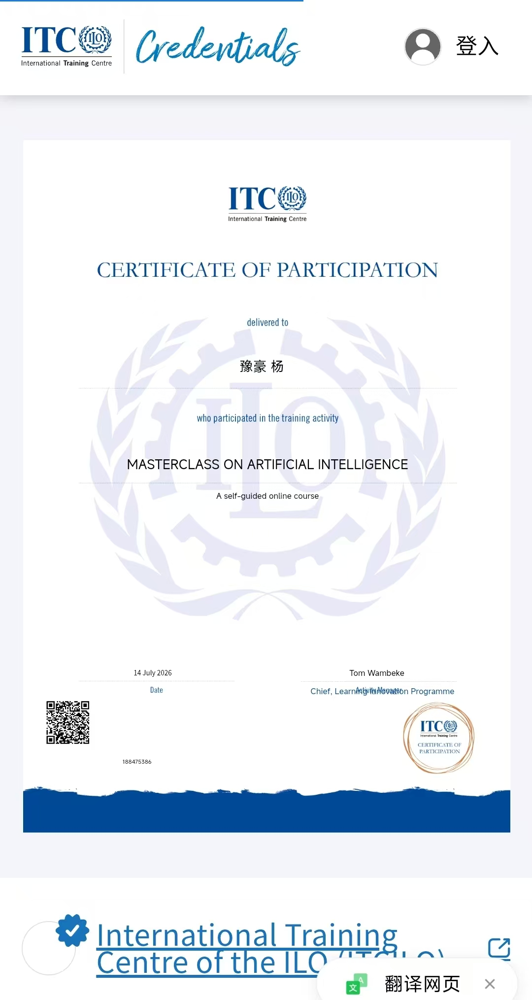
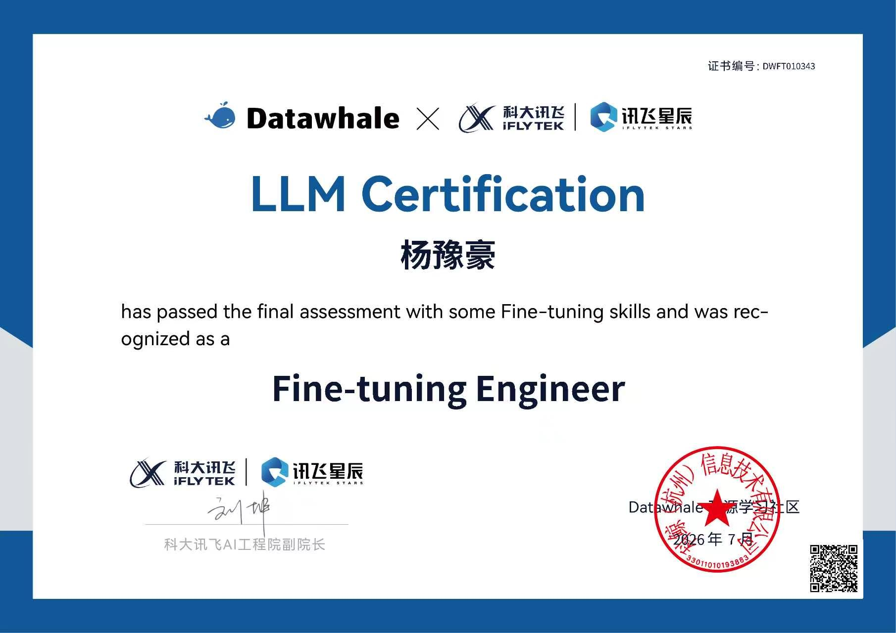
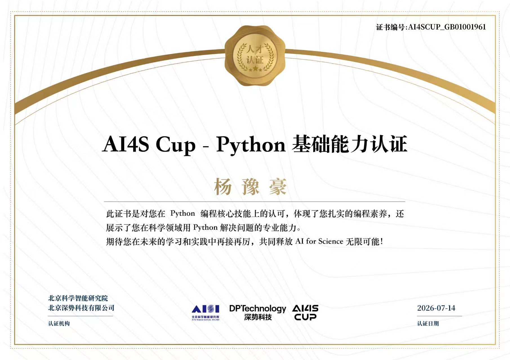

坦克大战
Canvas 单文件实现的经典坦克对战：键盘操控、敌军 AI 生成、碰撞检测与关卡节奏，纯原生 JavaScript 无依赖。
角色 · 独立开发成果 · 已上线可试玩
JavaScriptCanvas游戏
河南城建学院环境工程专业 2026 级本科生。我不满足于"会用工具"，而是习惯把想法真正变成能用的东西——网站、小游戏、自动化脚本，以及被别人拿去用的海报和文稿。
借助 AI 工具完成文件自动归类脚本，把日常重复劳动交给程序，AI 能力转化为实际生产力。
系统使用 DeepSeek、Kimi、通义千问、豆包、Trae 等，覆盖数据分析、写作辅助与工作流设计。
用 AI 辅助完成多套校园活动海报，独立制作演示文稿用于班级展示，获积极反馈。
完成课程学习并获证书；掌握监督学习、无监督学习、神经网络等核心概念。
讯飞星火 Prompt Engineer、华为 AI 微认证、达摩院高级人工智能训练师、Datawhale Agent Engineer 等。
2026 级本科生。专注环境工程与 AI 工具应用，用技术把想法落地。
Canvas 单文件实现的经典坦克对战：键盘操控、敌军 AI 生成、碰撞检测与关卡节奏，纯原生 JavaScript 无依赖。







这只是一个起点——我的能力与作品仍在快速生长。欢迎前辈与伙伴来交流，把想法碰撞成更多可能。
2813573523@qq.com